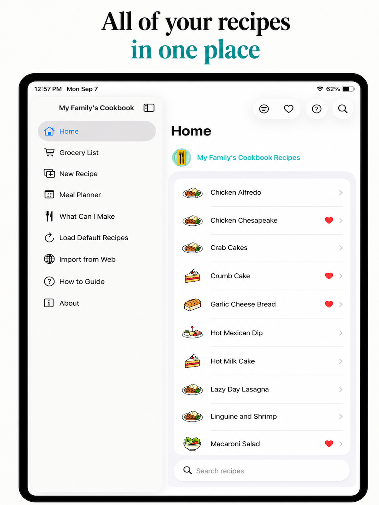
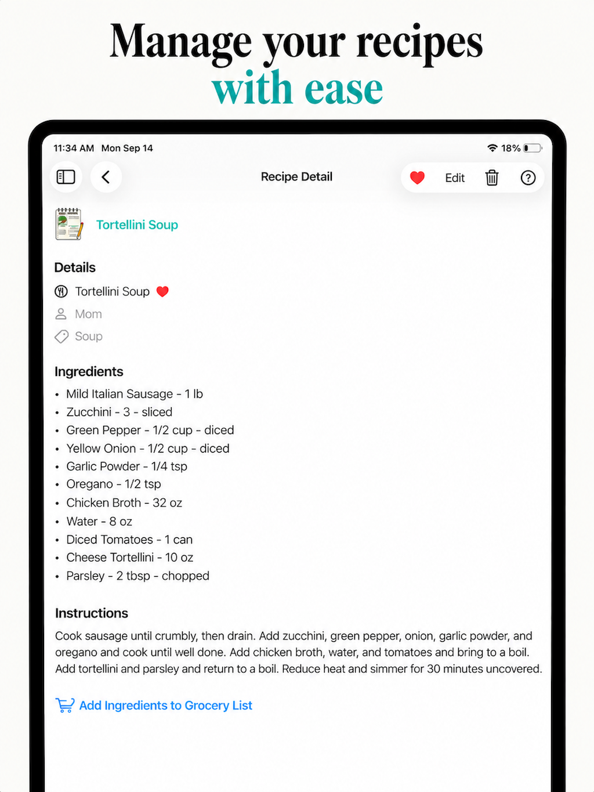
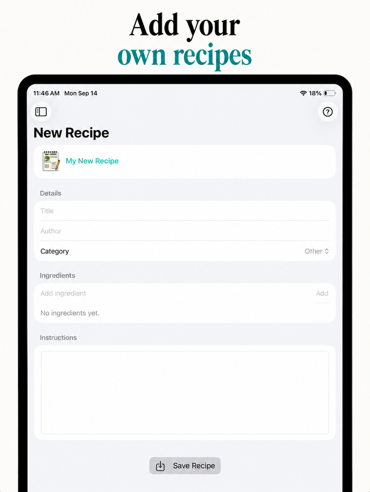
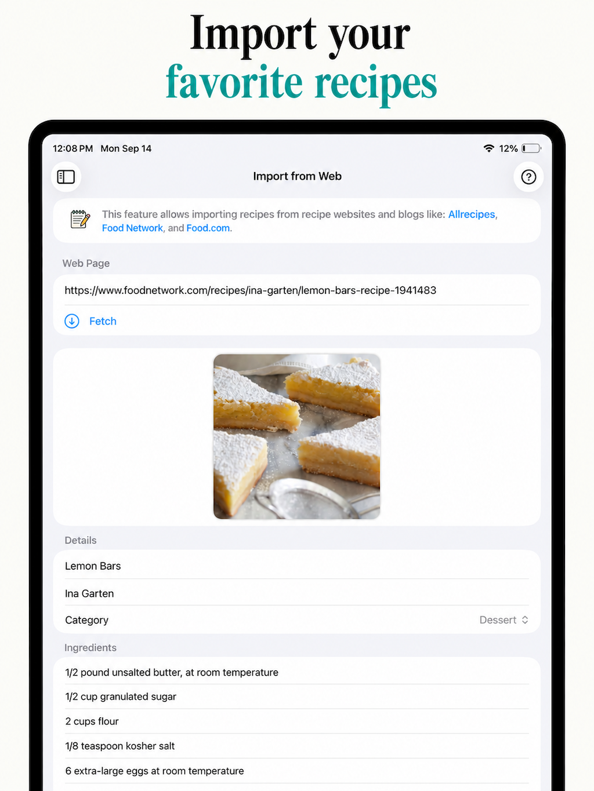
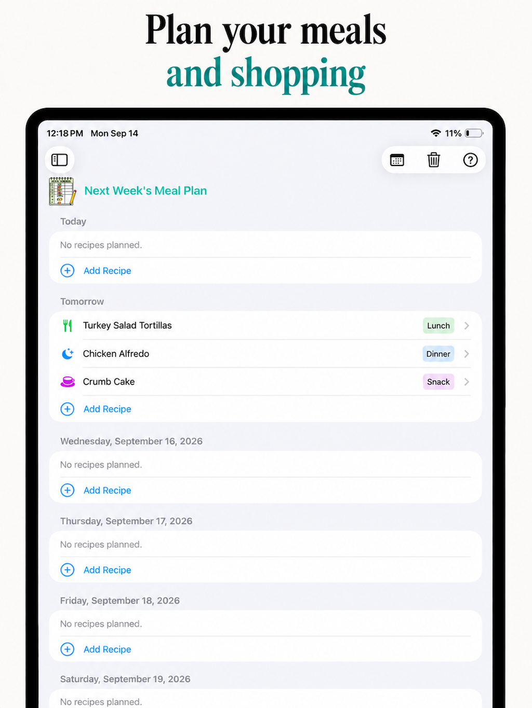
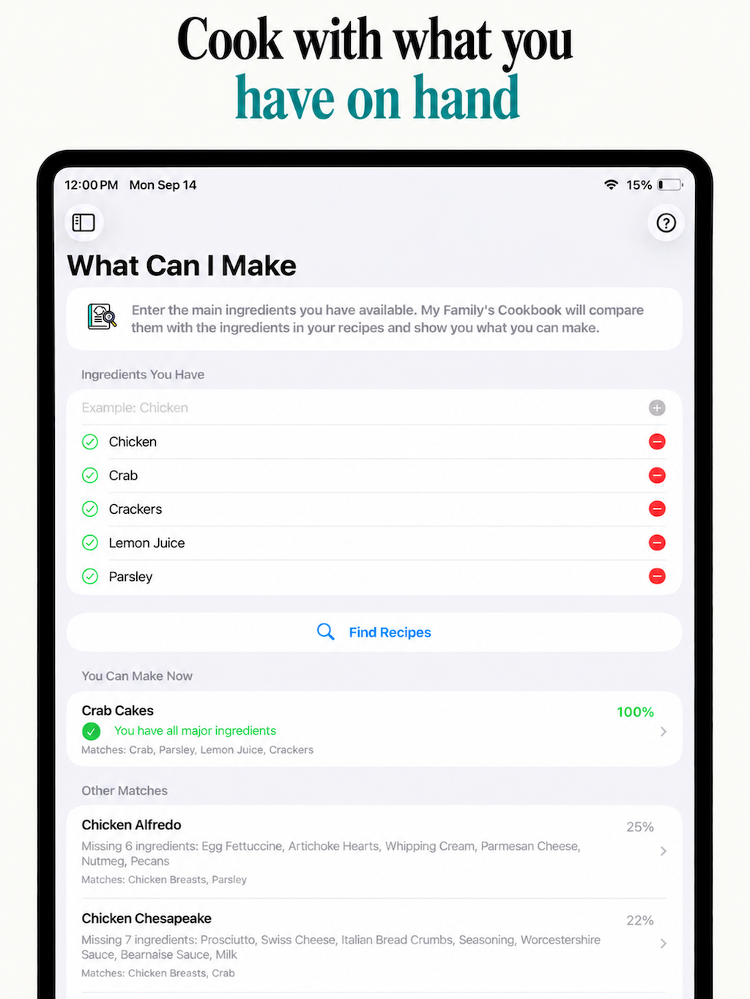
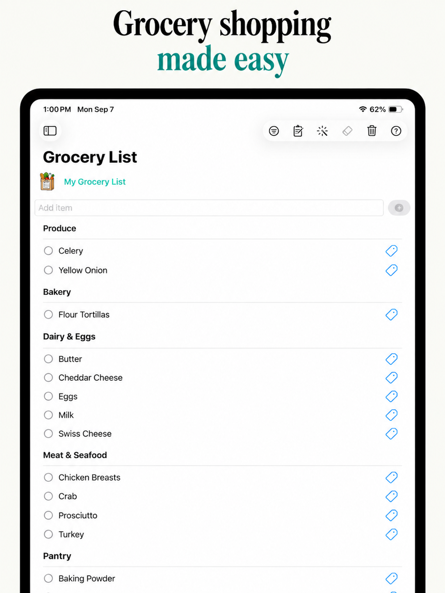
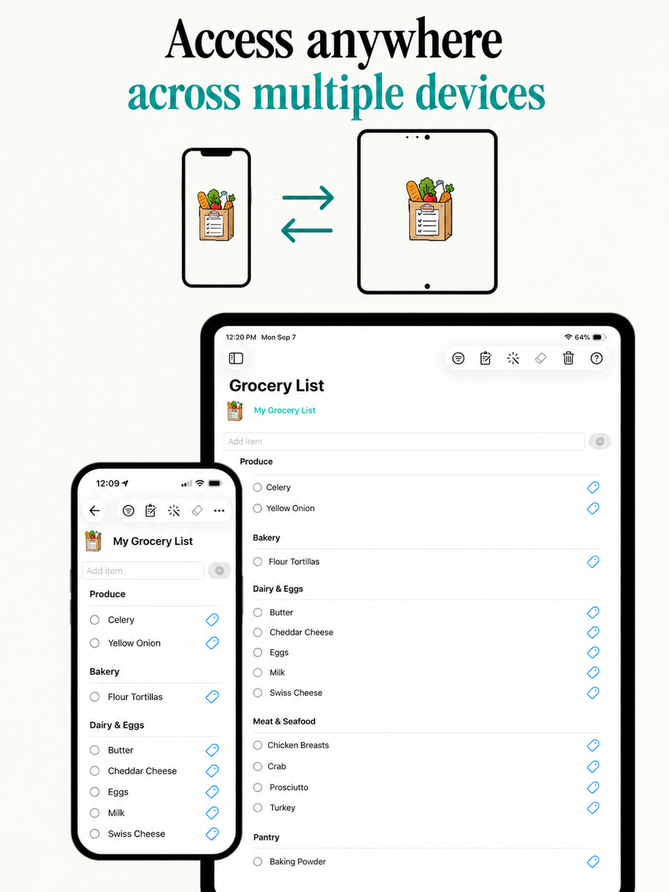
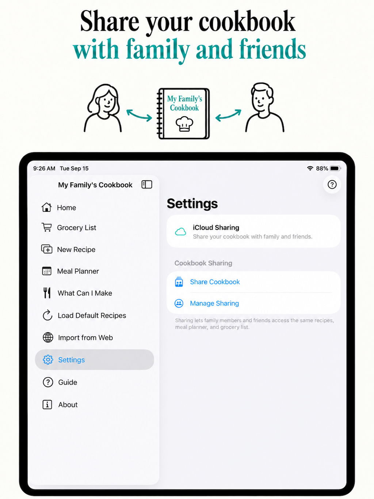

My Family's Cookbook
Your recipes, meal plans, and grocery list - all in one place
My Family's Cookbook is an easy-to-use recipe organizer, meal planner, and grocery list - with syncing across your devices and the ability to share your cookbook with family and friends.
Everyone has favorite memories from treasured family gatherings. In our family, those memories always included the food my mom brought. She was everyone's favorite cook! I built My Family's Cookbook to honor her, may she rest in peace, and the included recipes share some of her timeless family favorites.
Visit My Family's Cookbook in the App Store.
Explore My Family's Cookbook
Discover some of the ways My Family's Cookbook can help you organize recipes, plan meals, shop for groceries, and share your cookbook with family and friends.









My Family's Cookbook Features
Organize Your Recipes
Keep all of your favorite recipes together in one convenient cookbook. Search and filter your recipes, mark favorites, and quickly open any recipe to see its ingredients, instructions, and other details.
Add Your Own Recipes
Create your own recipes with categories, ingredients, instructions, and all the details you want to remember. Edit your recipes whenever you need to make a change.
Import Recipes from the Web
Found a recipe you love online? Import recipes from your favorite recipe websites and blogs without having to type everything in yourself.
What Can I Make?
Wondering what you can make with the ingredients you already have? Enter the main ingredients you have available and My Family's Cookbook will search your recipes for exact matches as well as other possibilities based on how closely their ingredients match what you have.
Plan Your Meals
Plan breakfast, lunch, dinner, and snacks for the upcoming week using recipes from your cookbook. You can also easily see what's planned for the current week.
Build Your Grocery List
Add ingredients directly from a recipe or add the ingredients needed for your upcoming meal plan. You can also add items manually. Your grocery list is conveniently organized by category, and you can view ingredient details such as quantity, packaging, and preparation information from the original recipe.
Share Your Cookbook
Share your cookbook with family members and friends so the recipes you love can be enjoyed by the people you love.
Sync Across Your Devices
Keep your cookbook available across your supported Apple devices with iCloud syncing.
Load the Included Recipes
My Family's Cookbook includes a collection of recipes that can be added to your cookbook whenever you choose. Many of these recipes are family favorites that inspired the creation of the app.
Help When You Need It
An included guide explains how to use the features of My Family's Cookbook, and help is available throughout the app.
More Features
Manage cookbook sharing, rate or share My Family's Cookbook with others, contact support, and easily access the app's privacy policy.
Whether you're preserving treasured family recipes, collecting new favorites, planning meals for the week, or simply trying to figure out what you can make with the ingredients you already have, My Family's Cookbook keeps everything together in one place.